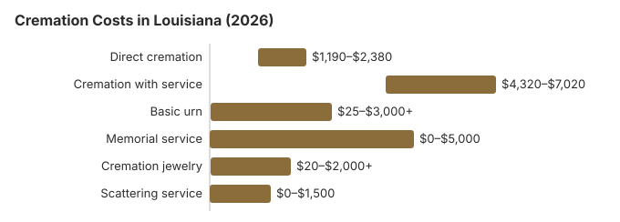

Cremation Costs in Louisiana (2026)
Cremation is less common in Louisiana than almost anywhere else, at about 35% of deaths by the rate we use, 28.4 points under the 63.4% national rate NFDA projected for 2025. Our estimate puts direct cremation near $1,700 and cremation with a viewing and service near $5,400. This page lays out those prices, explains why every Louisiana cremation runs through a licensed funeral director, and covers who pays for a pauper's disposition.
Louisiana Cremation Choices
Direct Cremation
- The least costly cremation a Louisiana home sells
- No service or visitation first
- Carried by the funeral home to the crematory
- The family gets the ashes back
- A memorial may be scheduled later
Cremation with Service
- Cremation after a full funeral
- A viewing can be held
- Services in a church or funeral chapel
- A plain urn is usually included
- Much like a traditional Louisiana funeral
What a Louisiana Cremation Costs, Line by Line
| Item | Louisiana figure | Typical spread |
|---|---|---|
| Direct cremation | $1,700 | $1,190 – $2,380 |
| Cremation with service | $5,400 | $4,320 – $7,020 |
| Basic urn | $50 – $300 | $25 – $3,000+ |
| Memorial service | $500 – $2,000 | $0 – $5,000 |
| Cremation jewelry | $50 – $500 | $20 – $2,000+ |
| Scattering service | $200 – $600 | $0 – $1,500 |
How the Louisiana numbers were made: they are estimates from our pricing model, not quotes gathered from Louisiana funeral homes, and they are not professional advice. See our method for the details, and the disclaimer.
State sources: board; La. R.S. 13:5715(A)(2).

Questions for a Louisiana Funeral Home
Before choosing a Louisiana provider, ask:
- What does direct cremation include? The price list must say. Transport, the cremation and a basic container for the ashes should all be covered.
- Can we skip the casket? Yes. Under 16 CFR 453.3(b), a Louisiana provider must accept an unfinished wood box or other alternative container for direct cremation.
- When will the ashes be ready? Ask too how they will be returned and whether a certified death certificate is part of the price.
Lowering the Cost of a Louisiana Cremation
Ways a Louisiana family can pay less:
- Compare written price lists. Ask each Louisiana funeral home for the itemized price list federal rules entitle you to, then put the direct cremation lines from three of them side by side.
- Ask about direct cremation specialists. Some Louisiana providers concentrate on simple cremation, and their prices can be lower than a full-service funeral home's. Because state law requires a licensed funeral director, check that any provider you use is licensed by the state board.
Cremation With a Viewing in Louisiana
Many Louisiana families who decide on cremation still want a wake or viewing first, and that is a common, entirely reasonable choice. It costs about $5,400 on our estimate, against about $1,700 for direct cremation. If a visitation matters, ask each funeral home to price cremation with a service as its own line, because homes can quote the two arrangements quite differently.
Cremation Resources
- Funeral Consumers AllianceNonprofit advocacy: compare cremation providers
- Cremation Jewelry GuideMemorial keepsakes and remembrance options
- Cremation vs. Burial CostsSide-by-side cost comparison
- Pet Cremation CostsOptions and prices for pet cremation and memorials
- Final Expense InsuranceCoverage options to help pay for cremation costs
Compare Funeral Costs
- Average Funeral Cost in 2026National cost breakdown with real prices
- Cremation vs. Burial Cost ComparisonSide-by-side price comparison to help you decide
- Funeral Cost BreakdownEvery line item explained: know what you're paying for
- Cheapest Funeral OptionsLower-cost alternatives, with typical price ranges
- Direct Cremation: Most Affordable OptionNFDA 2023 median $2,645 with a family-supplied container (latest available)
- How to Compare Funeral PricesStep-by-step guide to getting the best price
Frequently Asked Questions
What does cremation cost in Louisiana?
By our estimate, a Louisiana direct cremation, collecting the body through handing back the ashes, runs about $1,700; cremation with a ceremony is about $5,400.
Which cremation options are offered in Louisiana?
Louisiana funeral homes usually offer three arrangements: direct cremation, about $1,700, with no viewing or ceremony; cremation followed by a memorial on a later date; and traditional cremation, about $5,400, with a full funeral first.
What does Louisiana law require for a cremation?
Louisiana sets no minimum wait. A licensed funeral director arranges the cremation once the next of kin has signed the authorization, and the coroner issues the permit. The citations and the board's number are in the rules section near the end of this page.
Where may ashes be scattered in Louisiana?
That depends on the location. Private land needs the owner's consent, and parks and other public land have their own rules. Many Louisiana families place the urn in a church columbarium or a family tomb instead, or keep part of the ashes in jewelry.
Why is cremation becoming more common in Louisiana?
Price is part of it: our estimate puts cremation about $5,000 below a traditional burial in Louisiana, and the memorial can be held on any date. Even so, Louisiana's 35% leaves it far behind the nation, where NFDA projected 63.4% for 2025; strong traditions of family tombs and church burial help explain the gap.
How soon can a Louisiana cremation take place?
Most Louisiana cremations are complete 4 to 10 days after death. Direct cremation ($1,700) is the quickest, with the coroner's permit the main wait, as Louisiana sets no fixed waiting period (La. R.S. 37:876-877; 13:5716).
Can a Louisiana family have a viewing before cremation?
Yes, and many do, often with a rented casket. There is no waiting period to plan around; the funeral director needs the next of kin's signed authorization, and the coroner must issue the permit (La. R.S. 37:876-877; 13:5716).
More for Louisiana
The Louisiana coroner's cremation permit
When a Louisiana family chooses cremation, the funeral director must notify the coroner with jurisdiction right away. The coroner issues a cremation permit once the facts of the death show nothing suspicious; if they point to a possible crime or another reason an autopsy is needed, the permit is denied until the examination and evidence collection are finished (La. R.S. 13:5716; checked October 29, 2026).
- Delays explained: if a body under the coroner's jurisdiction cannot be released within 30 days of death, the coroner must tell the family in writing why.
- Who signs for the family: the authorizing agent follows the order in La. R.S. 37:876, starting with the person named in a notarial testament or notarized declaration, then the spouse, then a majority of the adult children.
Louisiana's board, pauper dispositions and veterans cemeteries
The licensing office for cremation providers in Louisiana is the Louisiana State Board of Embalmers and Funeral Directors; its number is 504-838-5109. The board, formed in 1914 under La. R.S. 37:831, licenses crematory authorities and retort operators as well as funeral homes; its count on September 16, 2026 was 48 crematory authorities and 427 funeral establishments.
Louisiana does not let a family arrange a cremation without a licensee. La. R.S. 37:848 reserves filing the death certificate, moving the body and attending the final disposition for a licensed funeral director, as the Funeral Consumers Alliance notes, so even the $1,700 direct cremation in the table goes through one.
No waiting period applies. The funeral director acts on the next of kin's signed authorization, and the coroner issues the permit (La. R.S. 37:876-877; 13:5716).
Pauper dispositions
When a coroner arranges a pauper's disposition, the parish or municipality where the person lived pays, and the cost may not exceed the actual price of the service (La. R.S. 13:5715). Ask the coroner whether that disposition is a cremation. (Source: La. R.S. 13:5715(A)(2).) A qualifying spouse or child can claim Social Security's $255 lump sum within two years.
Choosing cremation costs a Louisiana veteran nothing at a national cemetery: space and headstone remain free. Louisiana's options include Louisiana National Cemetery (225-654-1988), Port Hudson National Cemetery (225-654-1988, cremated remains only) and Central Louisiana Veterans Cemetery (337-238-6405); see cem.va.gov.
Louisiana checklist
- Ask each provider to itemize transport, the container and the crematory fee.
- Find out when the coroner usually signs the permit, so the memorial date is realistic.
- For a pauper's disposition, ask the parish coroner whether it is a cremation and the most it pays.
- Report a provider that misstates prices to the board at 504-838-5109.
- If the ashes will go into a family tomb or church niche, ask its keeper about urn size before buying one.